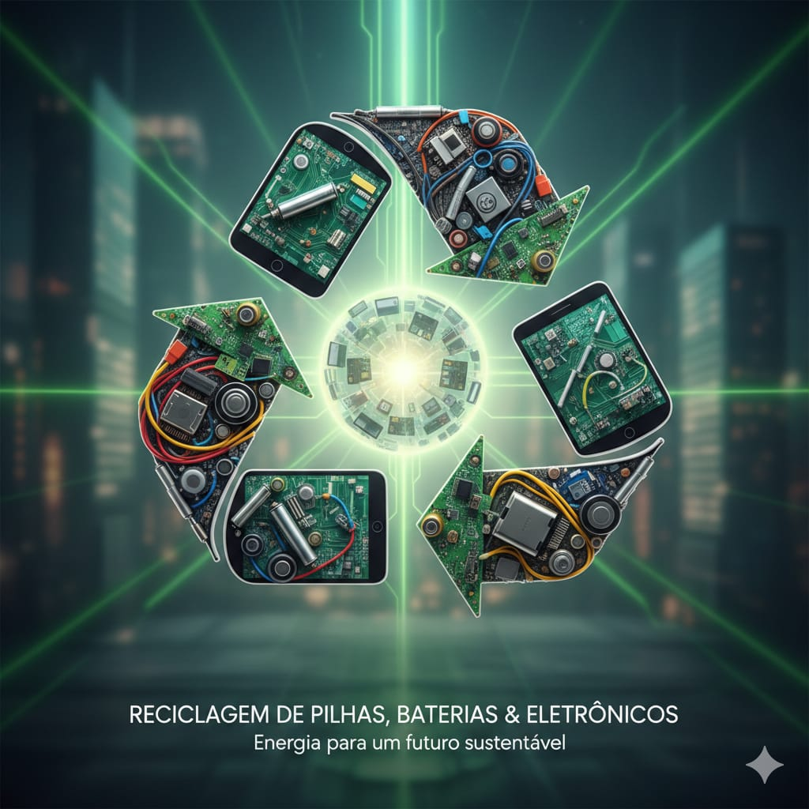

Mapa oficial de Santa Catarina
O IMA reúne locais de recebimento e permite buscar por município e filtrar por eletroeletrônicos ou pilhas e baterias.
Abrir Penso, Logo Destino ↗Celulares, pilhas e baterias não vão para o lixo comum. Descubra como separar esses materiais e encontre um ponto de coleta perto de você.

Pesquise por cidade ou CEP e veja opções próximas no mapa.
Os pontos e regras variam por município. Consulte a base estadual para filtrar a cidade e o tipo de resíduo antes de sair de casa.
O IMA reúne locais de recebimento e permite buscar por município e filtrar por eletroeletrônicos ou pilhas e baterias.
Abrir Penso, Logo Destino ↗A Prefeitura informa recebimento de até 3 eletrônicos, 2 volumes de eletrodomésticos e 10 pilhas ou baterias. Itacorubi: Rod. Admar Gonzaga, 72. Morro das Pedras: R. Francisco Vieira, 198. Confira horários e condições antes de ir.
Ver Ecoponto Itacorubi no mapa ↗ Ver Ecoponto Morro das Pedras no mapa ↗Os Ecopontos municipais são destinados a moradores de Florianópolis. Para São José, Palhoça, Biguaçu e demais municípios, use o mapa do IMA e confirme o recebimento diretamente com o ponto escolhido.
Leve esses materiais a locais que recebem resíduos eletroeletrônicos. A disponibilidade e as regras podem variar de um ponto para outro.
Celulares, computadores, tablets, cabos, carregadores e pequenos aparelhos sem uso.
Como preparar para entrega →Pilhas usadas de controles, brinquedos, relógios e outros equipamentos domésticos.
Como guardar com segurança →Baterias de celulares, notebooks, ferramentas e outros dispositivos portáteis.
Como entregar corretamente →Um cuidado simples ajuda a proteger pessoas, evita danos no transporte e facilita a triagem dos materiais.
Guarde eletrônicos e baterias em local seco, longe do calor e do alcance de crianças.
Se possível, cubra os polos de pilhas e baterias com fita não condutiva e evite contato com objetos metálicos.
Consulte o local antes de ir: alguns pontos aceitam apenas pilhas ou categorias específicas.
Faça backup e restaure celulares, tablets e computadores antes de entregar.
Quando entregues em canais adequados, componentes podem ser triados e encaminhados para reaproveitamento ou tratamento especializado.